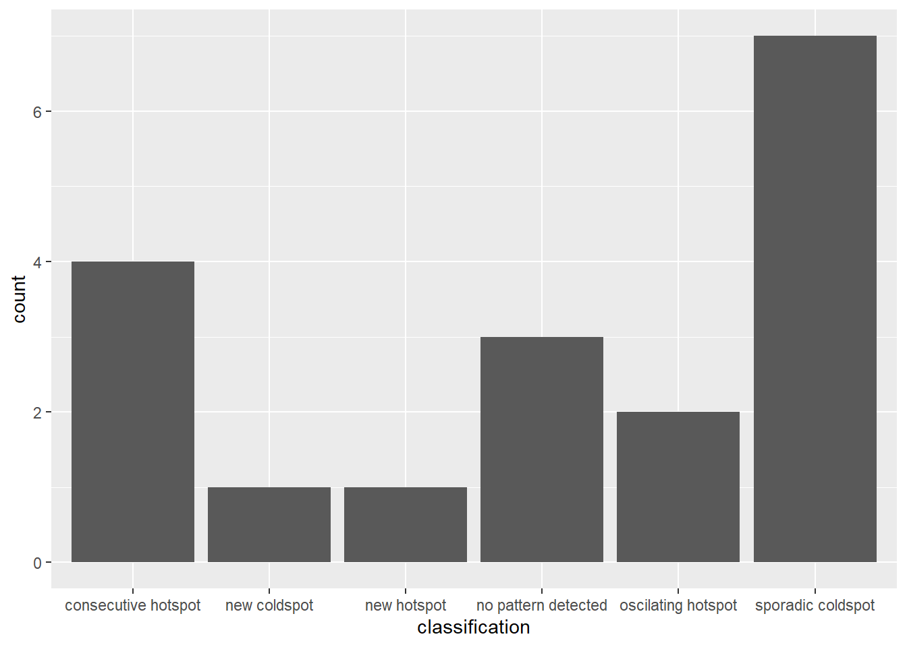
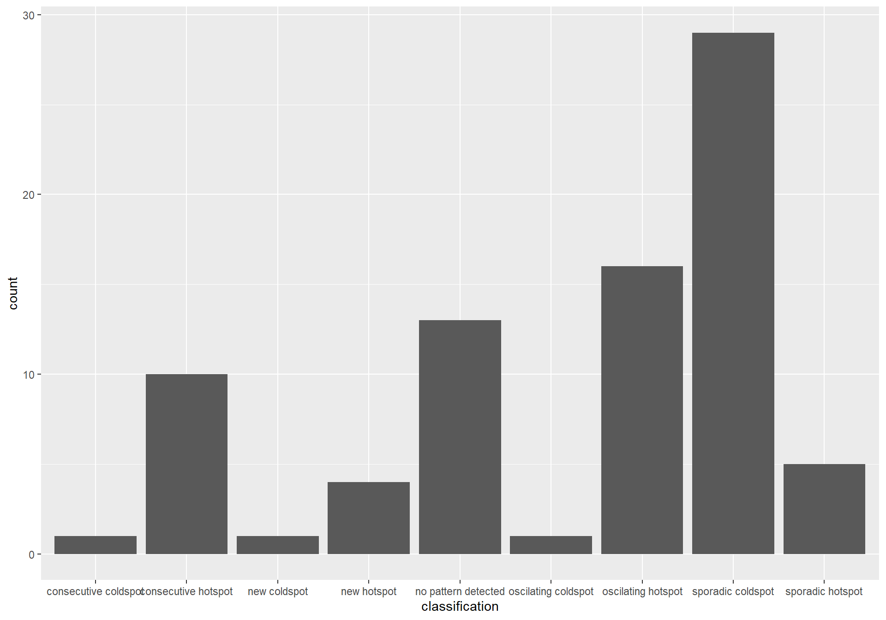
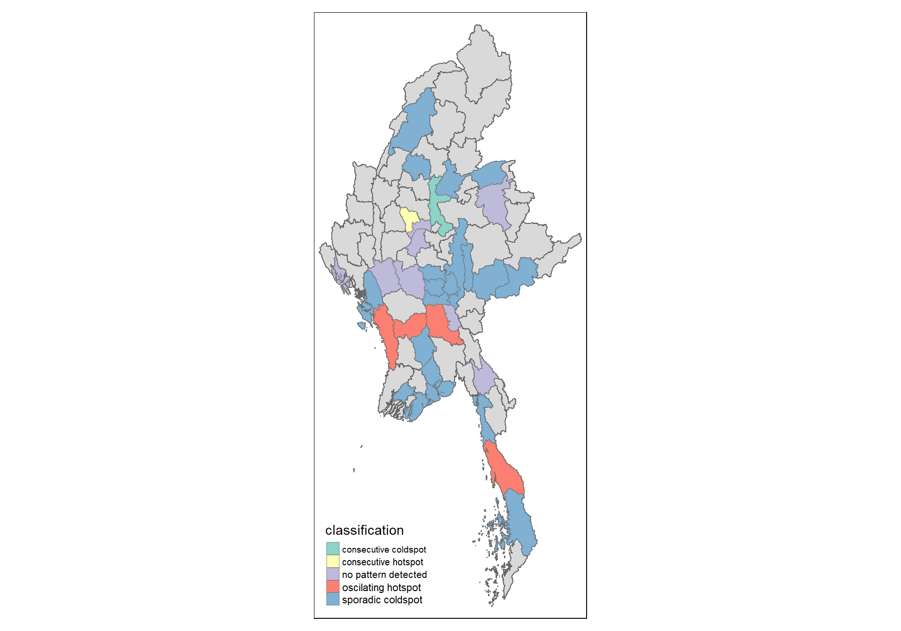

pacman::p_load(tidyverse, dplyr ,
sf, lubridate,plotly,
tmap, spdep, sfdep)Take-home Exercise 1c
Emerging Hot Spot Analysis: sfdep methods
Emerging Hot Spot Analysis (EHSA) is a spatio-temporal analysis method for revealing and describing how hot spot and cold spot areas evolve over time. The analysis consist of four main steps:
Building a space-time cube,
Calculating Getis-Ord local Gi* statistic for each bin by using an FDR correction,
Evaluating these hot and cold spot trends by using Mann-Kendall trend test,
Categorising each study area location by referring to the resultant trend z-score and p-value for each location with data, and with the hot spot z-score and p-value for each bin.
Data Loading and Prep
ACLED_MMR <- read_csv("data/MMR.csv")Shapes files for Myanmar at admin1 and admin2 levels
mmr_shp_mimu_2 <- st_read(dsn = "data/geospatial3",
layer = "mmr_polbnda_adm2_250k_mimu")Reading layer `mmr_polbnda_adm2_250k_mimu' from data source
`C:\imranmi\ISSS608-VAA\Take-home-ex\Take-home-Ex1c\data\geospatial3'
using driver `ESRI Shapefile'
Simple feature collection with 80 features and 7 fields
Geometry type: MULTIPOLYGON
Dimension: XY
Bounding box: xmin: 92.1721 ymin: 9.696844 xmax: 101.17 ymax: 28.54554
Geodetic CRS: WGS 84mmr_shp_mimu_1 <- st_read(dsn = "data/geospatial3",
layer = "mmr_polbnda2_adm1_250k_mimu_1")Reading layer `mmr_polbnda2_adm1_250k_mimu_1' from data source
`C:\imranmi\ISSS608-VAA\Take-home-ex\Take-home-Ex1c\data\geospatial3'
using driver `ESRI Shapefile'
Simple feature collection with 18 features and 6 fields
Geometry type: MULTIPOLYGON
Dimension: XY
Bounding box: xmin: 92.1721 ymin: 9.696844 xmax: 101.17 ymax: 28.54554
Geodetic CRS: WGS 84Renaming the region and district names so that our dataset will be the same as the shape files
ACLED_MMR_1 <- ACLED_MMR %>%
mutate(admin1 = case_when(
admin1 == "Bago-East" ~ "Bago (East)",
admin1 == "Bago-West" ~ "Bago (West)",
admin1 == "Shan-North" ~ "Shan (North)",
admin1 == "Shan-South" ~ "Shan (South)",
admin1 == "Shan-East" ~ "Shan (East)",
TRUE ~ as.character(admin1)
))ACLED_MMR_1 <- ACLED_MMR_1 %>%
mutate(admin2 = case_when(
admin2 == "Yangon-East" ~ "Yangon (East)",
admin2 == "Yangon-West" ~ "Yangon (West)",
admin2 == "Yangon-North" ~ "Yangon (North)",
admin2 == "Yangon-South" ~ "Yangon (South)",
admin2 == "Mong Pawk (Wa SAD)" ~ "Tachileik",
admin2 == "Nay Pyi Taw" ~ "Det Khi Na",
admin2 == "Yangon" ~ "Yangon (West)",
TRUE ~ as.character(admin2)
))Creating a Time Series Cube
In the code chunk below, spacetime() of sfdep is used to create an spatio-temporal cube.
Show the code
#GDPPC <- read_csv("data/aspatial/Hunan_GDPPC.csv")Show the code
#hunan <- st_read(dsn = "data/geospatial4",
#layer = "Hunan")Show the code
#class(GDPPC)Show the code
#class(hunan)Show the code
#GDPPC_st <- spacetime(GDPPC, hunan,
#.loc_col = "County",
#.time_col = "Year")Show the code
#is_spacetime_cube(GDPPC_st)Filtering for Battles for admin 1 & 2 and renaming the column names
loc_col identifier needs to be the same name for both data and shape file
Since 2024 data is not for the full year, we will remove it. We will the total up the count of Incidents for event type== Battles.
Battles_admin1 <- ACLED_MMR_1 %>%
group_by(year, admin1) %>%
filter(year != 2024, event_type == "Battles") %>%
summarise(Incidents = n()) %>%
ungroup() %>%
rename(ST = admin1)Battles_admin2 <- ACLED_MMR_1 %>%
group_by(year, admin2) %>%
filter(year != 2024, event_type == "Battles") %>%
summarise(Incidents = n()) %>%
ungroup() %>%
rename(DT = admin2)battles_spacial1 <- spacetime(Battles_admin1, mmr_shp_mimu_1,
.loc_col = "ST",
.time_col = "year")is_spacetime_cube(battles_spacial1)[1] FALSEbattles_spacial2 <- spacetime(Battles_admin2, mmr_shp_mimu_2,
.loc_col = "DT",
.time_col = "year")is_spacetime_cube(battles_spacial2)[1] FALSEThis is due to some years having zero incidents, this needs to be populated as zero, all state/region and district names have to be accounted for, and for each year
Show the code
#Battles_admin1_2124 <- read_csv("data/Battles_admin1_2124.csv")Show the code
#battles_test2 <- spacetime(Battles_admin1_2124, mmr_shp_mimu_1,
#.loc_col = "ST",
#.time_col = "year")Show the code
#is_spacetime_cube(battles_test2)Using complete_spacetime_cube()
As per above, we have an incomplete space time cube due to missing districts/regions, with no incidents in some years.
According to Josiah Perry, if an object is a sparse spatio-temporal grid, we can make it a full one using complete_spacetime_cube(). This works similarly to [tidyr::complete()].
complete_spacetime_cube() ensures that there is a row for each combination of location and time. New rows will contain missing values
spt1_complete <- complete_spacetime_cube(battles_spacial1)is_spacetime_cube(spt1_complete)[1] TRUEspt2_complete <- complete_spacetime_cube(battles_spacial2)is_spacetime_cube(spt2_complete)[1] TRUEWe have successfull converted to a space time object. However using complete_spacetime_cube() , leaves zero values as NAs, this needs to be converted to ‘0’ value.
# Replace NA with zero for the incidents where there were no incidents
spt1_complete$Incidents[is.na(spt1_complete$Incidents)] <- 0
spt2_complete$Incidents[is.na(spt2_complete$Incidents)] <- 0class(spt1_complete)[1] "spacetime" "tbl_df" "tbl" "data.frame"class(spt2_complete)[1] "spacetime" "tbl_df" "tbl" "data.frame"Computing Gi*
Next, we will compute the local Gi* statistics.
Deriving the spatial weights
The code below will be used to identify neighbors and to derive an inverse distance weights.
# for admin 1 regions/states
Incidents1_nb <- spt1_complete %>%
activate("geometry") %>%
mutate(nb = include_self(st_contiguity(geometry)),
wt = st_inverse_distance(nb, geometry,
scale = 1,
alpha = 1),
.before = 1) %>%
set_nbs("nb") %>%
set_wts("wt")#for admin 2 districts
Incidents2_nb <- spt2_complete %>%
activate("geometry") %>%
mutate(nb = include_self(st_contiguity(geometry)),
wt = st_inverse_distance(nb, geometry,
scale = 1,
alpha = 1),
.before = 1) %>%
set_nbs("nb") %>%
set_wts("wt")
Note
activate()of dplyr package is used to activate the geometry contextmutate()of dplyr package is used to create two new columns nb and wt.Then we will activate the data context again and copy over the nb and wt columns to each time-slice using
set_nbs()andset_wts()- row order is very important so do not rearrange the observations after using
set_nbs()orset_wts().
- row order is very important so do not rearrange the observations after using
Note that the data sets now have neighbors and weights for each time-slice.
head(Incidents1_nb)# A tibble: 6 × 5
ST year Incidents nb wt
<chr> <dbl> <dbl> <list> <list>
1 Ayeyarwady 2010 0 <int [4]> <dbl [4]>
2 Bago (East) 2010 0 <int [7]> <dbl [7]>
3 Bago (West) 2010 0 <int [6]> <dbl [6]>
4 Chin 2010 0 <int [4]> <dbl [4]>
5 Kachin 2010 2 <int [3]> <dbl [3]>
6 Kayah 2010 1 <int [3]> <dbl [3]>head(Incidents2_nb)# A tibble: 6 × 5
DT year Incidents nb wt
<chr> <dbl> <dbl> <list> <list>
1 Hinthada 2010 0 <int [7]> <dbl [7]>
2 Labutta 2010 0 <int [3]> <dbl [3]>
3 Maubin 2010 0 <int [7]> <dbl [7]>
4 Myaungmya 2010 0 <int [5]> <dbl [5]>
5 Pathein 2010 0 <int [5]> <dbl [5]>
6 Pyapon 2010 0 <int [5]> <dbl [5]>Computing Gi*
We can use these new columns to manually calculate the local Gi* for each location. We can do this by grouping by year and using local_gstar_perm() of sfdep package. After which, we use unnest() to unnest gi_star column of the newly created gi_starts data.frame.
#for admin 1
gi_stars1 <- Incidents1_nb %>%
group_by(year) %>%
mutate(gi_star = local_gstar_perm(
Incidents, nb, wt)) %>%
tidyr::unnest(gi_star)#for admin 2
gi_stars2 <- Incidents2_nb %>%
group_by(year) %>%
mutate(gi_star = local_gstar_perm(
Incidents, nb, wt)) %>%
tidyr::unnest(gi_star)Mann-Kendall Test
With these Gi* measures we can then evaluate each location for a trend using the Mann-Kendall test.
The code chunk below uses Ayeyarwady region.
cbg1 <- gi_stars1 %>%
ungroup() %>%
filter(ST == "Ayeyarwady") |>
select(ST, year, gi_star)The code chunk below uses Hinthada region.
cbg2 <- gi_stars2 %>%
ungroup() %>%
filter(DT == "Hinthada") |>
select(DT, year, gi_star)Next, we plot the result by using ggplotly() of plotly package.
Ayeyarwady region
p <- ggplot(data = cbg1,
aes(x = year,
y = gi_star)) +
geom_line() +
theme_light()
ggplotly(p)Hinthada district
p <- ggplot(data = cbg2,
aes(x = year,
y = gi_star)) +
geom_line() +
theme_light()
ggplotly(p)Mann Kendall test for Ayeyarwady region
cbg1 %>%
summarise(mk = list(
unclass(
Kendall::MannKendall(gi_star)))) %>%
tidyr::unnest_wider(mk)# A tibble: 1 × 5
tau sl S D varS
<dbl> <dbl> <dbl> <dbl> <dbl>
1 0.0769 0.743 7 91.0 334.Mann Kendall test for Hinthada district
cbg2 %>%
summarise(mk = list(
unclass(
Kendall::MannKendall(gi_star)))) %>%
tidyr::unnest_wider(mk)# A tibble: 1 × 5
tau sl S D varS
<dbl> <dbl> <dbl> <dbl> <dbl>
1 -0.495 0.0160 -45 91.0 334.Values of Mann Kendall test.
tau |
Kendall’s tau statistic |
sl |
two-sided p-value |
S |
Kendall Score |
D |
denominator, tau=S/D |
varS |
variance of S |
We can replicate this for each location by using group_by() of dplyr package.
Admin 1 regions/states
ehsa1 <- gi_stars1 %>%
group_by(ST) %>%
summarise(mk = list(
unclass(
Kendall::MannKendall(gi_star)))) %>%
tidyr::unnest_wider(mk)ehsa1# A tibble: 18 × 6
ST tau sl S D varS
<chr> <dbl> <dbl> <dbl> <dbl> <dbl>
1 Ayeyarwady 0.0769 0.743 7 91.0 334.
2 Bago (East) -0.143 0.511 -13 91.0 334.
3 Bago (West) 0.143 0.511 13 91.0 334.
4 Chin 0.780 0.000127 71 91.0 334.
5 Kachin -0.165 0.443 -15 91.0 334.
6 Kayah -0.165 0.443 -15 91.0 334.
7 Kayin -0.231 0.274 -21 91.0 334.
8 Magway 0.868 0.0000196 79 91.0 334.
9 Mandalay 0.407 0.0487 37 91.0 334.
10 Mon -0.0989 0.661 -9 91.0 334.
11 Nay Pyi Taw -0.297 0.155 -27 91.0 334.
12 Rakhine 0.407 0.0487 37 91.0 334.
13 Sagaing 0.495 0.0160 45 91.0 334.
14 Shan (East) -0.473 0.0215 -43 91.0 334.
15 Shan (North) -0.143 0.511 -13 91.0 334.
16 Shan (South) -0.670 0.00102 -61 91.0 334.
17 Tanintharyi 0.0110 1 1 91.0 334.
18 Yangon -0.341 0.101 -31 91.0 334.Admin 2 districts
ehsa2 <- gi_stars2 %>%
group_by(DT) %>%
summarise(mk = list(
unclass(
Kendall::MannKendall(gi_star)))) %>%
tidyr::unnest_wider(mk)ehsa2# A tibble: 80 × 6
DT tau sl S D varS
<chr> <dbl> <dbl> <dbl> <dbl> <dbl>
1 Bago 0.231 0.274 21 91.0 334.
2 Bawlake 0.0989 0.661 9 91.0 334.
3 Bhamo -0.363 0.0798 -33 91.0 334.
4 Danu Self-Administered Zone -0.451 0.0285 -41 91.0 334.
5 Dawei 0.253 0.228 23 91.0 334.
6 Det Khi Na -0.714 0.000459 -65 91.0 334.
7 Falam 0.231 0.274 21 91.0 334.
8 Gangaw 0.802 0.0000809 73 91.0 334.
9 Hakha 0.802 0.0000809 73 91.0 334.
10 Hinthada -0.495 0.0160 -45 91.0 334.
# ℹ 70 more rowsArrange to show significant emerging hot/cold spots
Admin 1 regions/states
emerging1 <- ehsa1 %>%
arrange(sl, abs(tau)) %>%
slice(1:5)emerging1# A tibble: 5 × 6
ST tau sl S D varS
<chr> <dbl> <dbl> <dbl> <dbl> <dbl>
1 Magway 0.868 0.0000196 79 91.0 334.
2 Chin 0.780 0.000127 71 91.0 334.
3 Shan (South) -0.670 0.00102 -61 91.0 334.
4 Sagaing 0.495 0.0160 45 91.0 334.
5 Shan (East) -0.473 0.0215 -43 91.0 334.Admin 2 districts
emerging2 <- ehsa2 %>%
arrange(sl, abs(tau)) %>%
slice(1:5)emerging2# A tibble: 5 × 6
DT tau sl S D varS
<chr> <dbl> <dbl> <dbl> <dbl> <dbl>
1 Kengtung -0.890 0.0000119 -81 91.0 334.
2 Gangaw 0.802 0.0000809 73 91.0 334.
3 Hakha 0.802 0.0000809 73 91.0 334.
4 Monghsat -0.780 0.000127 -71 91.0 334.
5 Tachileik -0.758 0.000197 -69 91.0 334.Performing Emerging Hotspot Analysis
Lastly, we will perform EHSA analysis by using emerging_hotspot_analysis() of sfdep package. It takes a spacetime object x (i.e. spt1_complete, sp2_complete), and the quoted name of the variable of interest (i.e. Incidents) for .var argument.
The k argument is used to specify the number of time lags which is set to 1 by default.
Lastly, nsim map numbers of simulation to be performed.
ehsa1 <- emerging_hotspot_analysis(
x = spt1_complete,
.var = "Incidents",
k = 1,
nsim = 99
)ehsa2 <- emerging_hotspot_analysis(
x = spt2_complete,
.var = "Incidents",
k = 1,
nsim = 99
)Visualising the distribution of EHSA classes
In the code chunk below, ggplot2 functions is used to reveal the distribution of EHSA classes as a bar chart.
Admin 1 regions/states
ggplot(data = ehsa1,
aes(x = classification)) +
geom_bar()
Admin2 districts
ggplot(data = ehsa2,
aes(x = classification)) +
geom_bar()
Visualising EHSA
In this section, we will learn how to visualise the geographic distribution EHSA classes. However, before we can do so, we need to join both (mmr_shp_mimu_1 & ehsa1) and (mmr_shp_mimu_2 & ehsa2) together by using the code chunk below.
mmr1_ehsa <- mmr_shp_mimu_1 %>%
left_join(ehsa1,
by = join_by(ST == location))
mmr2_ehsa <- mmr_shp_mimu_2 %>%
left_join(ehsa2,
by = join_by(DT == location))Next, tmap functions will be used to plot a categorical choropleth map by using the code chunk below.
ehsa_sig1 <- mmr1_ehsa %>%
filter(p_value < 0.05)
tmap_mode("plot")
tm_shape(mmr1_ehsa) +
tm_polygons() +
tm_borders(alpha = 0.5) +
tm_shape(ehsa_sig1) +
tm_fill("classification") +
tm_borders(alpha = 0.4)ehsa_sig2 <- mmr2_ehsa %>%
filter(p_value < 0.05)
tmap_mode("plot")
tm_shape(mmr2_ehsa) +
tm_polygons() +
tm_borders(alpha = 0.5) +
tm_shape(ehsa_sig2) +
tm_fill("classification") +
tm_borders(alpha = 0.4)